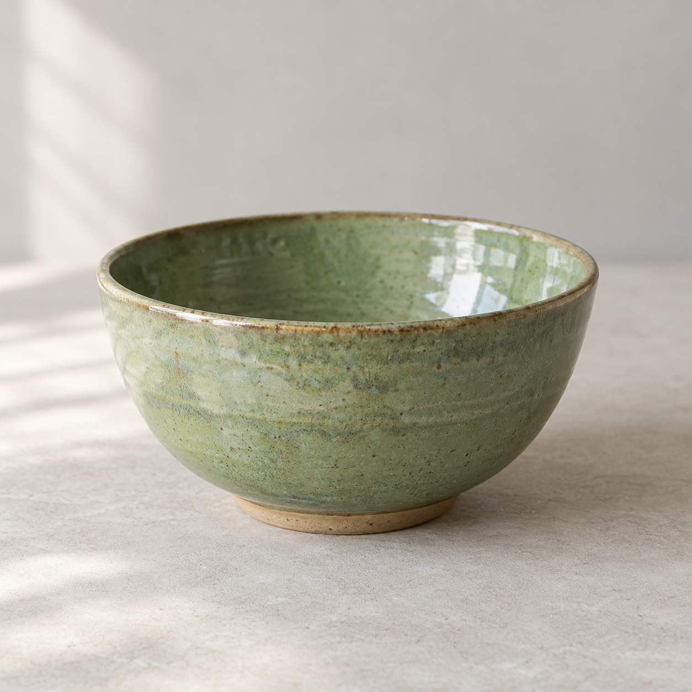
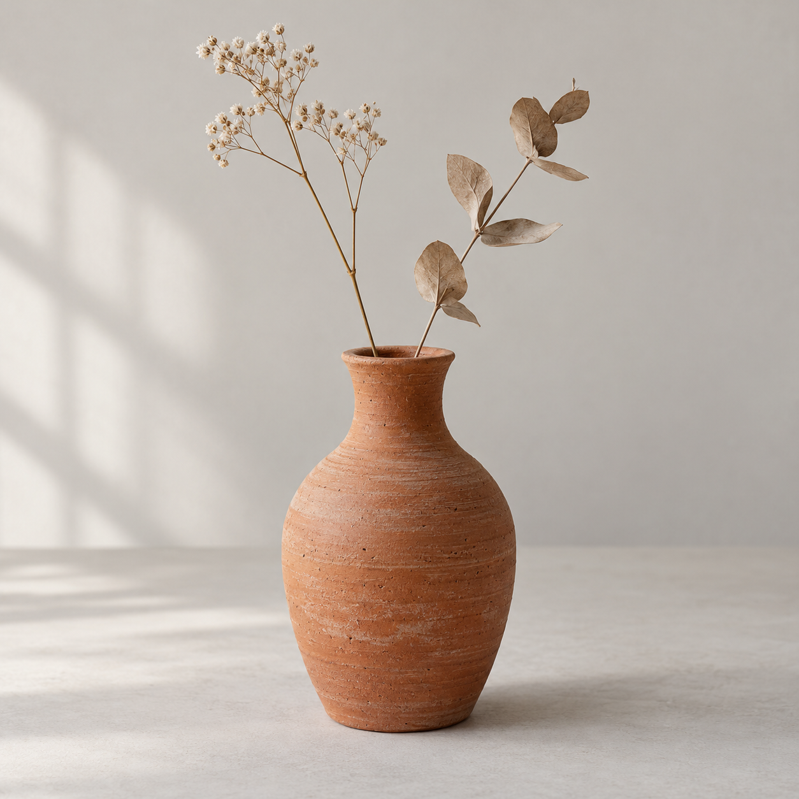
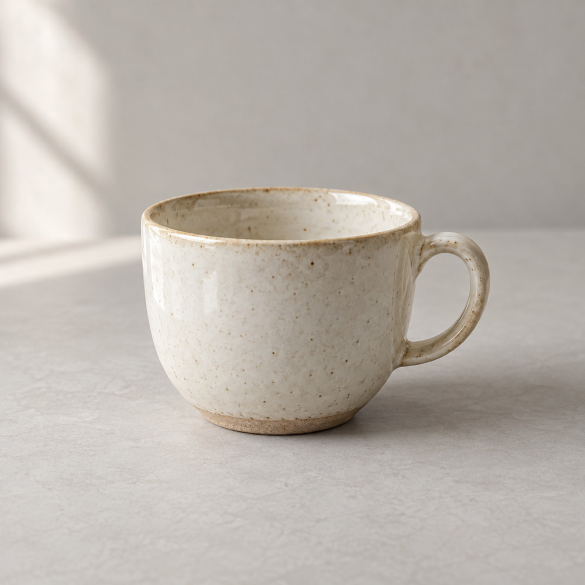

Rastera 0.1.0 · Windows · Primeros pasos
De una carpeta de fotos a una selección lista para usar
Rastera te permite revisar imágenes, recordar cuáles te interesan y preparar varias copias de una vez. Esta guía recorre ese trabajo con tres fotografías de productos.
Cuándo puede ayudarte
| Si trabajas con… | Puedes usar Rastera para… |
|---|---|
| Fotos de una tienda | Elegir las imágenes de los productos y generar copias con el mismo formato y límite de tamaño. |
| Imágenes para diseño o contenido | Marcar recursos útiles, buscarlos por etiquetas y preparar archivos para una entrega. |
| Fotos personales | Revisar una carpeta de viaje o familia y guardar favoritos sin modificar las fotografías. |
| Imágenes que vas a compartir | Exportar versiones que eliminen los metadatos originales, como EXIF y GPS, conservando tus originales. |
Material de práctica
El ejemplo es una pequeña colección de cerámica. Las tres fotografías son PNG de 1.254 × 1.254 píxeles. Descárgalas en una misma carpeta llamada Originales y crea, junto a ella, otra carpeta vacía llamada Para-web.


Para seguir el tutorial: abre Rastera y ten preparadas las dos carpetas. Las capturas muestran estados de demostración ya configurados; los pasos te indican cómo reproducirlos. Los nombres de las carpetas de las capturas pueden diferir de los tuyos.
01Elegir las fotografías que quieres usar
Situación: has terminado una sesión de fotos y necesitas decidir cuáles vas a publicar.
- Pulsa Abrir carpeta… y elige
Originales. También puedes arrastrar esa carpeta a Rastera o usar Ctrl + Shift + O. - En Biblioteca, haz clic en una miniatura. A la derecha, Propiedades muestra sus dimensiones, formato y tamaño de archivo.
- Usa Ctrl + clic para añadir o retirar imágenes de la selección. Con Shift + clic seleccionas un rango. Para este ejercicio, pulsa Seleccionar todo: el contador debe indicar 3 seleccionadas.
Revisar una imagen con más detalle
Haz doble clic en la taza para abrir el Visor. Usa la rueda para ampliar y arrastra para desplazarte. 100% muestra un píxel de imagen por píxel físico de pantalla; Ajustar o Home vuelve a mostrar la imagen completa. Si entraste desde una carpeta, las flechas permiten pasar a la anterior o siguiente.
Resultado: tienes identificadas las imágenes que quieres utilizar. La selección sirve para trabajar ahora; los favoritos y las etiquetas permiten recordarlas en próximas sesiones.
02Etiquetar y encontrar imágenes después
Situación: quieres distinguir las fotos aprobadas de las que aún tienes que revisar.
- Vuelve a Biblioteca, selecciona la taza y abre Propiedades → Editar organización.
- Marca Favorita, escribe
cerámica, aprobaday pulsa Guardar cambios. - Repite con el cuenco. Para el jarrón, usa
cerámica, revisary deja Favorita sin marcar. La organización se edita imagen por imagen.
Encontrar solo las fotos aprobadas
Pulsa Deseleccionar y escribe aprobada en Buscar nombre o etiqueta. Deben aparecer la taza y el cuenco: 2 / 3 imágenes. También puedes activar Solo favoritos o filtrar por formato. Para exportar solo estos resultados, pulsa ahora Seleccionar todo.
Ten en cuenta la selección: cambiar un filtro no elimina las imágenes seleccionadas que queden ocultas. Antes de elegir un nuevo grupo, pulsa Deseleccionar. Restablecer limpia los filtros, pero mantiene la selección.
Resultado: puedes volver a localizar las fotos aprobadas. Los favoritos y etiquetas permanecen entre sesiones en este equipo; no se escriben dentro de las fotografías. Si mueves o renombras un archivo fuera de Rastera, su nueva ruta no hereda automáticamente la organización anterior.
03Preparar varias imágenes para publicar
Situación: necesitas copias para una ficha de producto o una entrega, con un formato y tamaño uniformes.
Para practicar con las tres fotos, pulsa Restablecer, Deseleccionar y Seleccionar todo. Usaremos JPEG, calidad 90 y un límite de 1.000 píxeles en el lado mayor. Es una receta de ejemplo; ajústala a los requisitos de tu publicación.
- Pulsa Exportar selección (3).
- En Elegir carpeta…, elige
Para-web. Debe existir y ser distinta de la carpeta de los originales. - Selecciona JPEG, deja Sin rotación, activa Limitar lado mayor y escribe 1000 px. Ajusta Calidad JPEG a 90.
- Lee la información de Color y metadatos de las copias y marca la casilla de aceptación. Las copias se convierten a sRGB y eliminan los metadatos originales.
- Pulsa Revisar salidas. Desplázate dentro del panel para comprobar los tres nombres y las dimensiones: 1.000 × 1.000 px.
- Si el plan es correcto, pulsa Exportar 3 copias. Si aparece un conflicto porque el archivo de destino ya existe, elige otra carpeta vacía y vuelve a revisar.
Al terminar, comprueba que las tres filas muestran Publicada y que el resumen indica 3 publicadas · 0 sin publicar · Finalizado.
Qué cambió en el archivo

En este ejemplo, la copia ocupa aproximadamente un 94% menos. Son tamaños medidos de estos archivos, no una promesa para todas las fotos. JPEG usa compresión con pérdidas; revisa el detalle antes de entregar una imagen.
Resultado: tienes tres archivos nuevos, con el sufijo -rastera, preparados con una misma receta. Los PNG originales permanecen intactos. El límite mantiene la proporción y nunca amplía una imagen pequeña.
04Compartir copias sin los metadatos originales
Situación: vas a compartir fotos personales o de trabajo y no necesitas incluir la ubicación GPS ni otros datos de la cámara.
Utiliza el mismo proceso de exportación del caso anterior. Rastera elimina de las copias los metadatos originales, incluidos EXIF, GPS y XMP, y añade un perfil de color sRGB. Comprueba las imágenes exportadas y comparte los archivos de Para-web.
Esto elimina esos datos incrustados, pero no oculta lo que se ve en la fotografía ni cambia un nombre de archivo que contenga información personal. Las fotos generadas de este tutorial no contienen GPS: aquí se explica el comportamiento de la exportación, sin simular una comparación de ubicación.
Elegir el formato adecuado
| Formato | Cuándo usarlo en este flujo | Transparencia |
|---|---|---|
| JPEG | Fotografías cuando la entrega admite compresión con pérdidas. La calidad es configurable. | Se reemplaza por el fondo elegido. |
| PNG | Gráficos o archivos que quieras recodificar sin la compresión con pérdidas de JPEG. | Se conserva. |
| WebP sin pérdidas | Cuando el destino admita WebP y necesites una exportación sin pérdidas en la codificación. | Se conserva. |
La conversión de color o el redimensionado pueden cambiar los píxeles aunque el formato use codificación sin pérdidas. El soporte actual es JPEG, PNG y WebP estáticos SDR de 8 bits; RAW, HDR y gestión del perfil del monitor quedan fuera de esta versión.
Resultado: compartes copias preparadas para su destino y conservas los archivos originales con sus datos.
Atajos y dudas durante el trabajo
| Acción | Cómo hacerlo |
|---|---|
| Abrir carpeta / imagen | Ctrl + Shift + O / Ctrl + O |
| Añadir a la selección | Ctrl + clic |
| Seleccionar un rango | Shift + clic |
| Seleccionar resultados del filtro | Seleccionar todo o Ctrl + A en Biblioteca, fuera de un campo de texto |
| Abrir visor / ajustar imagen | Doble clic en la miniatura / Home en el visor |
| Pasar a la imagen anterior o siguiente | ← / → en el visor al navegar por una carpeta |
| Quitar selección / volver a Biblioteca | Esc, cuando no haya otra ventana abierta |
No encuentro una imagen en la cuadrícula
Prueba Restablecer para limpiar los filtros. Rastera muestra los formatos compatibles de la carpeta abierta y no recorre subcarpetas. Si has añadido archivos desde el explorador, pulsa Actualizar; esta acción también limpia la selección.
Se interrumpió un lote
Las copias ya publicadas permanecen. Abre Herramientas → Recuperar / ver lote → Recuperar un lote… y elige el archivo rastera-export-*.sqlite de la carpeta de destino. Revisa la comprobación de archivos y exporta solo los pendientes verificados. Los conflictos requieren revisión y no se reanuda nada automáticamente.
Solo quiero exportar una imagen
En el visor, Exportar imagen usa únicamente la imagen abierta, aunque exista una selección anterior en Biblioteca.
Una imagen no se puede abrir o exportar
Comprueba el mensaje que muestra Rastera. Los archivos dañados, formatos o perfiles de color no compatibles y algunas imágenes demasiado grandes para el presupuesto de memoria pueden rechazarse.